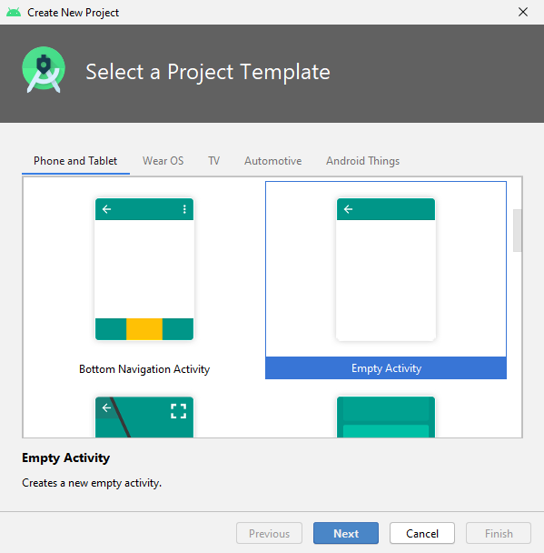
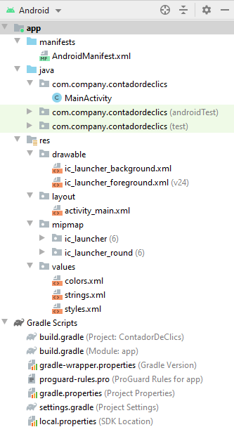
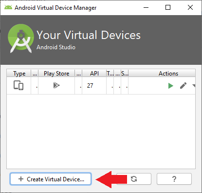
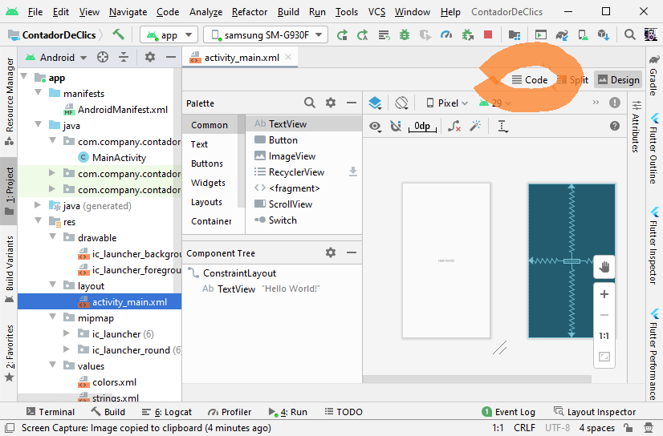
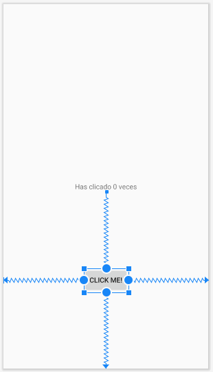
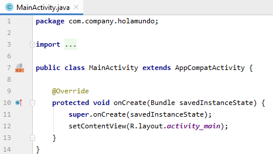

<meta charset="utf-8">
<meta name="viewport" content="width=device-width, initial-scale=1">
<script src="https://cdn.jsdelivr.net/npm/clipboard@2.0.6/dist/clipboard.min.js"></script>
<script type="module" src="/sofi/js/script.js"></script>
<link rel="stylesheet" href="/sofi/css/estil.css">

<nav></nav>

<header>
  <h1>Apps</h1>

  <abstract>
    <p>Esta práctica te enseña cómo crear tu primera aplicación para Android. 
      Aprenderás cómo <strong>crear </strong>un proyecto de Android con Android Studio, y <strong>ejecutar </strong>una versión depurable de la aplicación.</p>
  
    <outcome>
      <p>Desarrollaremos una App que consiste en un contador de clics:</p>
      
      <a href="https://github.com/gerardfp/apps" target="_blank">https://github.com/gerardfp/apps</a>  
    </outcome>
  </abstract>

</header>

  

<section>
  <h2>Obtener Android Studio</h2>
    
  <p>Antes de comenzar, descarga e instala Android Studio </p>
  <p><download><a href="https://developer.android.com/studio/" target="_blank">Download Android Studio</a></download></p>
  <p>Descomprime el zip y ejecuta el lanzador <inshell>studio.sh</inshell></p>

</section>
<section>
  <h2>Crear un proyecto Android</h2>

  <ol>
    <li>En Android Studio, crea un nuevo proyecto:
      <ul>
        <li>Si todavía no has abierto un proyecto, en la pantalla de <strong>bienvenida</strong>, 
          haz clic en <menuoption>Start a new Android Studio project</menuoption>:
          
        </li>
        <li>Si has abierto un proyecto, ve a <menuoption>File</menuoption><menuoption>New</menuoption><menuoption>New project</menuoption>.</li>    
      </ul>
    </li>
    <li>Elije la plantilla para la <w>Activity</w> principal de la App. Para esta práctica elije <strong>Empty Activity</strong>.
      
    </li>
    <li>Rellena los campos de la pantalla.
      </li>
      <info><p><strong>Minimum SDK</strong>: es la versión de mínima de 
        Android que deben tener los dispositivos para poder 
        ejecutar la app. Para soportar el <em>máximo de dispositivos</em> 
        que sea posible, se debe establecer a la <em>versión más baja</em> 
        posible. Sin embargo, cuanto más baja es la versión menos 
        características de android modernas puede utilizar la app.</p></info>
  </ol>
</section>

<section>
  
  <h2>Estructura del proyecto</h2>
  
  <p>El proyecto creado es una aplicación básica de &#34;Hello World&#34; 
    que contiene algunos <strong>archivos por defecto</strong>. 
    </p>
  

  <p>Veamos los más importantes:</p>
  <ul>

    <li>
      <p><file>app/src/main/AndroidManifest.xml</file></p>
      <p>El <a href="https://developer.android.com/guide/topics/manifest/manifest-intro.html" target="_blank">archivo de manifiesto</a> describe las características fundamentales de la aplicación y define cada uno de sus componentes. Aquí especificaremos las Activities que tiene nuestra app y los <strong>permisos </strong>que requiere (Cámara, Contactos, Internet, etc.)</p>
    </li>
    <li>
      <p><file>app/src/main/java/com.example.helloworld/MainActivity.java</file></p>
      <p>Contiene la definición de clase para la 
      <strong>Activity</strong> (pantalla) principal. 
      En este fichero programaremos el comportamiento de 
      esta Activity.</p>
    </li>
    <li>
      <p><file>app/src/main/res/layout/activity_main.xml</file></p>
      <p>Este archivo XML define el <em>layout </em>de la 
      actividad, es decir los elementos (widgets) que tiene 
      la pantalla. Por defecto, contiene un elemento 
      <w>TextView</w> con el texto 
      <string>¡Hola mundo!</string>.</p>
    </li>
    <li>
      <p><file>app/build.gradle</file></p>
      <p>Android Studio utiliza Gradle para compilar y construir 
      la aplicación. Hay un archivo <file>build.gradle</file> 
      para cada módulo del proyecto, así como un archivo 
      <file>build.gradle</file> de todo el proyecto. 
      Por lo general, sólo estaremos interesados en el 
      archivo <file>build.gradle (module: app)</file>. 
      Ahí es donde se encuentran las dependencias de 
      construcción de la aplicación, incluyendo los 
      ajustes <w>defaultConfig</w>:</p>
      <ul>
        <li><w>compiledSdkVersion</w> es la versión 
          de la plataforma con la que va a compilar la aplicación. 
          Por defecto, se establece en la última versión del SDK 
          instalado en el ordenador.<br></li>
        <li><w>applicationId</w> es el nombre 
          de paquete completo para la aplicación, que se especificó
          en el asistente de Nuevo Proyecto.<br></li>
        <li><w>minSdkVersion</w> es la versión del 
          SDK mínimo especificado durante el asistente 
          Nuevo proyecto. Es la versión más antigua del 
          SDK de Android que soporta la aplicación.<br></li>
        <li><w>targetSdkVersion</w> indica la 
          versión más alta de Android con la que se ha probado 
          la aplicación.</li>
      </ul>
      <p>Más adelante usaremos el fichero <file>build.gradle (module: app)</file>
        para instalar nuevas bibliotecas y componentes para nuestra App, 
        en el apartado <w>dependencies</w>.</p>
    </li>
  </ul>
  <p>Veamos también los subdirectorios 
    <directory>/res</directory> que contienen los 
    <a href="https://developer.android.com/guide/topics/resources/overview.html" target="_blank">recursos</a> 
    para la aplicación:</p>
  <ul>
    <li>
      <p><directory>drawable/</directory></p>
      <p>Directorio de <strong>imágenes</strong>.</p>
    </li>
    <li>
      <p><directory>layout/</directory></p>
      <p>Directorio para los archivos que definen la 
      <strong>interfaz de usuario</strong> de la aplicación, 
      como <file>activity_main.xml</file>, que describe 
      un diseño básico para la <w>MainActivity</w>.</p>
    </li>
    <li>
      <p><directory>mipmap/</directory></p>
      <p>Contiene los <strong>iconos</strong> Lanzadores.</p>
    </li>
    <li>
      <p><directory>values/</directory></p>
      <p>Directorio para otros archivos XML que contienen 
        una colección de recursos.</p>
      <ul>
        <li>
          <p>En el archivo <file>colors.xml</file> se definen 
          los <strong>colores</strong> de la app. </p>
        </li>
        <li>
          <p>En el archivo <file>strings.xml</file> se definen  
          todos los <strong>textos</strong> que se muestren en 
          nuestra app.</p>
        </li>
        <li>
          <p>En el archivo <file>styles.xml</file> se define 
          el <strong>tema</strong> de nuestra app.</p>
        </li>
      </ul>
    </li>
  </ul>


</section>


<section>

  <h2>Ejecutar la App</h2>
  
  <p>Este es el aspecto de la App &#34;Hello World&#34;:</p>
  

  <h3>Ejecutar en un dispositivo real</h3>
  
  <p>Configurar el móvil de la siguiente manera:</p>
  <ol type="1" start="1">
    <li>Conectar el dispositivo al equipo de desarrollo con un 
      cable USB.</li>
    <li>Habilitar <strong>la depuración USB</strong> en el dispositivo 
      móvil, yendo a <menuoption>Ajustes</menuoption><menuoption>Opciones de desarrollador</menuoption>.</li>
  </ol>
  <warn><p>En Android 4.2 y versiones posteriores, 
    <strong>Opciones de desarrollador</strong> se oculta de forma 
    predeterminada. Para que esté disponible, ve al menú del móvil 
    <menuoption>Ajustes</menuoption><menuoption>Acerca del teléfono</menuoption>
    y toca <strong>el número de compilación</strong> SIETE veces. 
    Regresa a la pantalla anterior y encontrarás 
    las <strong>Opciones de desarrollador</strong>.</p>
  </warn>

  <p>Ejecuta la aplicación desde Android Studio de la siguiente manera:</p>
  <ol>
    <li>Selecciona el dispositivo móvil
      
    <li><p>Haz clic en <strong>Ejecutar</strong>  desde la barra de herramientas.</p></li>
  </ol>
  
  <p>Android Studio instala la aplicación en el dispositivo conectado y la inicia.</p>
  
  <h3>Ejecutar en el emulador</h3>

  <p>Selecciona el emulador y haz clic 
    en </p>
  
  
  <optional>
    <p>Si no tienes ningún emulador creado ve a 
      <menuoption>AVD Manager</menuoption> y crea uno:</p>
    
    
    <p>Selecciona el Hardware y la versión de Android que desees.</p>
  </optional>
  
</section>

<section>

  <h2>Editar el Layout</h2>
  <p>En los ficheros XML de la carpeta <directory>res/layout</directory> 
    se define la disposición de <em>widgets</em> de las pantallas.</p>
  
  <p>Por el momento, en la pantalla <file>activity_main.xml</file> 
    solamente hay un <w>TextView</w> que muestra el 
    texto <string>Hello world</string>.</p>
  
  <p>Para editar los ficheros de layout hay dos formas: </p>
  <ul>
    <li>Modo gráfico: permite arrastrar los widgets de la paleta 
      a la pantalla, y modificar sus atributos.</li>
    <li>Modo código: permite modificar directamente el código XML.</li>
  </ul>
  
  <p>Habitualmente, trabajaremos en modo código:</p>
  <ol>
    <li>Haz doble click sobre el fichero 
      <file>res/layout/activity_main.xml</file></li>
    <li><p>Haz click en el icono  
      (<em>o también Split...</em>)</p>
      
    </li>
  </ol>
  
  <p>Modificaremos el layout de la siguiente forma:</p>
  <ul>
    <li>El <w>TextView</w> que actualmente contiene el 
      texto <string>Hello World</string>, lo usaremos para mostrar 
      el contador</li>
    <li>Añadiremos un botón que, al ser pulsado, 
      aumentará el contador</li>
  </ul>

  <h3>TextView</h3>
  <p>Para cambiar el texto que se muestra en un <w>TextView</w>, hay que modificar el 
    atributo <w>android:text</w>.</p>
  <p>Cambia el valor de este atributo al texto 
    <string>Has clicado 0 veces</string></p>
  <code html>android:text="Has clicado 0 veces"</code>
  

  <h3>Button</h3>
  <p>Añade también el <w>Button</w> que, al ser pulsado, augmentará el 
    contador:</p>
  <code xml>
    &lt;Button
      android:layout_width=&#34;wrap_content&#34;
      android:layout_height=&#34;wrap_content&#34;
      android:text=&#34;Click me!&#34;/&gt;
  </code>
  

  <info>
    <p>Los atributos <w>layout_width</w> 
    y <w>layout_height</w>, especifican el <strong>ancho</strong> 
    y <strong>alto</strong> 
    del elemento.</p>

    <ul>
      <li>El valor <w>&#34;wrap_content&#34;</w> indica 
        que el ancho/alto se debe <strong>adaptar al contenido</strong> del elemento. 
        En el caso del Button y el TextView, al texto que contienen.</li>
      <li>El valor <w>&#34;match_parent&#34;</w> indica 
        que el ancho/alto debe ser <strong>el mismo que el del elemento padre</strong>.</li>
      <li>También se puede establecer un ancho/alto de tamaño fijo 
        en píxeles.</li>
    </ul>
  </info>

  <h3>ConstraintLayout</h3>
  
  <p>En el diseño actual del layout podemos ver que la 
    disposición del botón no es la más <em>adecuada</em>:</p>
  
  <p><em>Quizá quedaría mejor si el botón estuviera dispuesto debajo 
    del TextView...</em></p>
  <p>Para disponer los elementos en un <w>ConstraintLayout</w> 
    hay que definir las <strong>constraints</strong> en cada elemento.
    <br>Podemos imaginar las <em>constraints</em> como <strong>muelles</strong> 
    que tiran de un elemento en las cuatro direcciones 
    (arriba, abajo, izquierda y derecha). El elemento queda posicionado 
    en <strong>equilibrio</strong> entre las fuerzas de los muelles 
    que se han definido.</p>
  
  <h4>TextView</h4>
  <p>En el caso del <w>TextView</w> vemos que ya hay definidas cuatro 
    <em>constraints</em>:</p>
  
  
  <p>En cada <em>constraint</em> se indica hacia dónde debe 
    tirar el &#34;muelle&#34;. Podemos ver que:</p>
  <ul>
    <li>La <w>constraintBottom</w> tira del TextView 
      hacia la parte inferior (<w>toBottomOf</w>) 
      de su <w>parent</w> 
      <br>(El elemento padre del TextView  es el  ConstraintLayout ).</li>
    <li>La <w>constraintLeft</w> tira del TextView 
      hacia la parte izquierda (<w>toLeftOf</w>) 
      de su <w>parent</w>.</li>
    <li>La <w>constraintRight</w> tira del TextView 
      hacia la parte derecha (<w>toRightOf</w>) 
      de su <w>parent</w>.</li>
    <li>La <w>constraintTop</w> tira del TextView 
      hacia la parte superior (<w>toTopOf</w>) 
      de su <w>parent</w>.</li>
  </ul>
  
  <p>Como vemos, el TextView queda en equilibrio vertical entre las constraints Top y Bottom, 
    y horizontal entre Left y Right, y de esta manera queda centrado dentro del ConstraintLayout.</p>

  <h4>Button</h4>
  <p>Ahora, definiremos las constraints del <w>Button</w> para posicionarlo 
    de esta manera:</p>
  
  
  <p>La <w>constraintBottom</w> del botón tirará de él hacia la parte inferior de su padre (el ConstraintLayout).</p>
  <p>La <w>constraintLeft</w> hacia la parte izquierda de su padre.</p>
  <p>La <w>constraintRight</w> hacia la parte derecha de su padre.</p>
  
  <p>Hasta aquí la cosa es sencilla. Basta definir las constraints igual que en el 
    TextView. Estas constraints apuntan todas al elemento padre:</p>
  
  
  <p>En la <w>constraintTop</w> la cosa cambia...</p> 
  
  <p>Observa en la imagen antorior que la <w>constraintTop</w> tira del 
    botón <strong>hacia la parte inferior</strong> del TextView.</p>
  
  <p>Para hacer referencia al <em>elemento padre</em> hemos visto que 
    podemos usar <w>parent</w>. 
    Pero ¿cómo hacemos referencia al TextView? Para ello hay que asignarle un <strong>identificador</strong> al TextView.</p>
  
  <p>Para asignar un identificador a un elemento hay que usar el 
    atributo <w>android:id</w>, y en el valor hay que 
    poner <w>@+id/</w> antes del identificador que queramos asignarle.</p>
  
  <p>Así pues, para asignar el identificador <string>contadorDeClics</string> al TextView, 
    le añadiremos este atributo:</p>
  <code>android:id=&#34;@+id/contadorDeClics&#34;</code>

  
  
  <p>Ahora ya podemos añadir la <w>constraintTop</w> al botón 
    y hacer que tire de él hacia la parte inferior (<w>toBottomOf</w>) del TextView:</p>
  <code xml data-line="6">
    &lt;Button
      android:id=&#34;@+id/augmentarElContador&#34;
      android:layout_width=&#34;wrap_content&#34;
      android:layout_height=&#34;wrap_content&#34;
      android:text=&#34;Click me!&#34;
      app:layout_constraintTop_toBottomOf=&#34;@+id/contadorDeClics&#34;
      app:layout_constraintBottom_toBottomOf=&#34;parent&#34;
      app:layout_constraintLeft_toLeftOf=&#34;parent&#34;
      app:layout_constraintRight_toRightOf=&#34;parent&#34;/&gt;
  </code>

  <observe>
  <p>También hemos agregado el identificador <w>augmentarElContador</w> al botón, 
    ya que en el siguiente apartado haremos referencia a este botón 
    desde el código Java.</p>
  </observe>

  <p>El código completo del layout <file>activity_main.xml</file> quedará así:</p>
  
  <codefile><a href="https://github.com/gerardfp/ContadorDeClics/blob/master/app/src/main/res/layout/activity_main.xml" target="_blank">app/src/main/res/layout/activity_main.xml</a></codefile>
  
  <!--<pre
    class="language-xml"
    data-jsonp="https://api.github.com/repos/damm8/apps/contents/app/src/main/res/layout/activity_main.xml">
  </pre>-->
  <code xml>
    &lt;?xml version=&#34;1.0&#34; encoding=&#34;utf-8&#34;?&gt;
    &lt;androidx.constraintlayout.widget.ConstraintLayout 
      xmlns:android=&#34;http://schemas.android.com/apk/res/android&#34;
      xmlns:app=&#34;http://schemas.android.com/apk/res-auto&#34;
      xmlns:tools=&#34;http://schemas.android.com/tools&#34;
      android:layout_width=&#34;match_parent&#34;
      android:layout_height=&#34;match_parent&#34;
      tools:context=&#34;.MainActivity&#34;&gt;

      &lt;TextView
          android:id=&#34;@+id/contadorDeClics&#34;
          android:layout_width=&#34;wrap_content&#34;
          android:layout_height=&#34;wrap_content&#34;
          android:text=&#34;Has clicado 0 veces&#34;
          app:layout_constraintBottom_toBottomOf=&#34;parent&#34;
          app:layout_constraintLeft_toLeftOf=&#34;parent&#34;
          app:layout_constraintRight_toRightOf=&#34;parent&#34;
          app:layout_constraintTop_toTopOf=&#34;parent&#34; /&gt;

      &lt;Button
          android:id=&#34;@+id/augmentarElContador&#34;
          android:layout_width=&#34;wrap_content&#34;
          android:layout_height=&#34;wrap_content&#34;
          android:text=&#34;Click me!&#34;
          app:layout_constraintBottom_toBottomOf=&#34;parent&#34;
          app:layout_constraintLeft_toLeftOf=&#34;parent&#34;
          app:layout_constraintRight_toRightOf=&#34;parent&#34;
          app:layout_constraintTop_toBottomOf=&#34;@+id/contadorDeClics&#34;/&gt;

    &lt;/androidx.constraintlayout.widget.ConstraintLayout&gt;
  </code>
</section>

<section>
  <h2>Programar el comportamiento</h2>
  
  <p>Si ejecutas la app, verás el texto y el botón. Sin embargo, cuando clicas 
    en el botón, este no hace nada. No se ha definido el comportamiento 
    de este botón.</p>
  <p>Para agregar un comportamiento al botón debemos realizarlo en el 
    código Java (<em>o también Kotlin</em>). Escribiremos el código en el 
    fichero <file>MainActivity.java</file>.</p>

  

  <p>En este fichero hay definida la clase <w>MainActivity</w>, y en ella 
    el método <w>onCreate()</w>.</p>
    
  <p>Este método <w>onCreate()</w> es el que el Sistema Android 
    ejecuta en primer lugar cuando se inicia nuestra App.</p>

  <p>En este método lo primero que debes observar es la 
    llamada <w>setContentView(R.layout.activity_main)</w>. 
    Esta llamada establece el layout <file>activity_main.xml</file>, es decir, 
    lo que se mostrará en pantalla es lo que hemos puesto en este fichero 
    de layout (el TextView y el Button).</p>
  
  <p>Una vez visto esto vayamos al código necesario para nuestro contador. 
    Necesitaremos:</p>

  <ol>
    <li>Una variable <w>int</w> que vaya almacenando el contador</li>
    <li>Programar el Button para que, cada vez que se haga click, augmente el 
      contador y actualice el TextView</li>
  </ol>

  <p>Crear la variable para almacenar el número de clicks es la parte más sencilla:</p>

  <code java data-line="3">
    public class MainActivity extends AppCompatActivity {

      int contador;

      @Override
      protected void onCreate(Bundle savedInstanceState) {
          super.onCreate(savedInstanceState);
          setContentView(R.layout.activity_main);
      }
    }  
  </code>

  <h3>findViewById</h3>

  <p>Para programar el comportamiento del Button, y luego actualizar el 
    texto del TextView, necesitaremos tener 
    una <strong>referencia</strong> a estos dos elementos.</p>

  <p>Para ello definiremos una variable para cada elemento y llamaremos 
    al método <w>findViewById()</w> para vincular estas variables 
    con los elementos del layout correspondientes. 
    Al método <w>findViewById()</w> hay que pasarle el identificador 
    que hayamos definido en el fichero XML.</p>

  <code java data-line="4,5,12,13">
    public class MainActivity extends AppCompatActivity {
  
      int contador;
      TextView contadorDeClics;
      Button augmentarElContador;

      @Override
      protected void onCreate(Bundle savedInstanceState) {
          super.onCreate(savedInstanceState);
          setContentView(R.layout.activity_main);

          contadorDeClics = findViewById(R.id.contadorDeClics);
          augmentarElContador = findViewById(R.id.augmentarElContador);
      }
    }
  </code>

  <info><p>Observa que las llamadas a <w>findViewById()</w> las hemos 
    hecho después de establecer el layout <file>activity_main.xml</file>. 
    El método <w>findViewById()</w> buscará los elementos en este fichero. </p>
  </info>

  <optional>
    <p><strong>Opcionalmente</strong>, se puede activar el ViewBinding para no 
      tener que hacer las llamadas a <w>findViewById()</w> para vincular los 
      elementos del XML con las variables JAVA.</p>
  
  <p>Imagina que en lugar de 1 botón y 1 textview, tenemos 10 botones y 5 textviews... 
    son 15 variables y 15 llamadas a findViewById !!</p>

  <p>Para activar el ViewBinding hay que ir al fichero 
    <file>build.gradle (Module: app)</file> y añadir la siguiente configuración:</p>

  <codefile><a href="https://github.com/gerardfp/ContadorDeClics/blob/master/app/build.gradle" target="_blank">app/build.gradle</a></codefile>
  <code none data-line="3-5">
    android {
      . . .
      buildFeatures {
        viewBinding = true
      }
    }
  </code>

  <p>Luego, hay que definir una única variable y a partir de ésta podremos acceder 
  a los elementos XML. También hay que modificar la llamada a <w>setContentView()</w>, 
  de la siguiente manera:</p>
  
  <code java data-line="3,8,10,11">
    public class MainActivity extends AppCompatActivity {

      ActivityMainBinding binding;

      @Override
      protected void onCreate(Bundle savedInstanceState) {
          super.onCreate(savedInstanceState);
    //        setContentView(R.layout.activity_main);
          
          binding = ActivityMainBinding.inflate(getLayoutInflater());
          setContentView(binding.getRoot());
      }
    }
  </code>

  <p>De esta forma, para acceder al Button y al TextView 
    (u otros elementos que tuviésemos) podemos hacerlo directamente a 
    través de la variable <w>binding</w> y el identificador de los 
    elementos, así:</p>

  <code java>
    binding.contadorDeClics
    binding.augmentarElContador
  </code>
</optional>

<h3>OnClickListener</h3>

<p>Un vez tenemos vinculados el Button y el TextView, el siguiente paso es 
  programar el botón para que responda al CLICK (aumentando el contador 
  y mostrando el texto en el TextView).</p>

<p>Para que el botón responda al evento CLICK, hay que hacer una llamada 
  al método <w>setOnClickListener()</w> y pasarle un objeto de clase 
  <w>View.OnClickListener</w>. 
  En el método <w>onClick()</w> de este objeto programaremos lo 
  que queremos que se haga cuando se pulse el botón:</p>

<code java data-line="15-21">
  public class MainActivity extends AppCompatActivity {

    int contador;
    TextView contadorDeClics;
    Button augmentarElContador;

    @Override
    protected void onCreate(Bundle savedInstanceState) {
        super.onCreate(savedInstanceState);
        setContentView(R.layout.activity_main);

        contadorDeClics = findViewById(R.id.contadorDeClics);
        augmentarElContador = findViewById(R.id.augmentarElContador);

        augmentarElContador.setOnClickListener(new View.OnClickListener() {
            @Override
            public void onClick(View view) {
                // aumentar el contador
                // mostrar el contador en el TextView
            }
        });
    }
  }
</code>


<optional>
  <p>Si has usado ViewBinding, recuerda poner <w>binding.augmentarElContador</w>
     en lugar de <w>augmentarElContador</w>.</p>
</optional>

<p>Ahora, dentro del método <w>onClick()</w> del <em>listener</em>, 
  solo hay que incrementar el contador y cambiar el texto del TextView. Para cambiar 
  el texto hacemos una llamada al método <w>setText()</w> del 
  TextView.</p>

<code java>
  contador++;
  contadorDeClics.setText("Has clicado " + contador + " veces");
</code>


<p>Finalmente, el código de la aplicación queda así:</p>

<codefile><a href="https://github.com/gerardfp/ContadorDeClics/blob/master/app/src/main/java/com/company/contadordeclics/MainActivity.java" target="_blank">app/src/main/java/com/company/contadordeclics/MainActivity.java</a></codefile>
<code java>
  public class MainActivity extends AppCompatActivity {

    int contador;
    TextView contadorDeClics;
    Button augmentarElContador;

    @Override
    protected void onCreate(Bundle savedInstanceState) {
        super.onCreate(savedInstanceState);
        setContentView(R.layout.activity_main);

        contadorDeClics = findViewById(R.id.contadorDeClics);
        augmentarElContador = findViewById(R.id.augmentarElContador);

        augmentarElContador.setOnClickListener(new View.OnClickListener() {
            @Override
            public void onClick(View view) {
                contador++;
                contadorDeClics.setText(&#34;Has clicado &#34; + contador + &#34; veces&#34;);
            }
        });
    }
  }
</code>

<optional>
  <p>Si has usado ViewBinding, el código quedaría así:</p>
  <code java>
    public class MainActivity extends AppCompatActivity {

      int contador;
      ActivityMainBinding binding;

      @Override
      protected void onCreate(Bundle savedInstanceState) {
          super.onCreate(savedInstanceState);
          binding = ActivityMainBinding.inflate(getLayoutInflater());
          setContentView(binding.getRoot());
          
          binding.augmentarElContador.setOnClickListener(new View.OnClickListener() {
              @Override
              public void onClick(View view) {
                  contador++;
                  binding.contadorDeClics.setText(&#34;Has clicado &#34; + contador + &#34; veces&#34;);
              }
          });
      }
    }
  </code>
</optional>
</section>
    
<section>

  <h2>Práctica: MultiContador</h2>

  <p>Desarrolla una app llamada <name>P1 MultiContador</name> que haga la función de un contador de personas.</p>

  

  <p>La app debe tener 4 contadores independientes y un contador global (que lleve la suma de los 4 contadores).</p>
  <p>Debe haber un botón de reset para cada contador y un botón de reset global que resetee los 4 contadores a la vez.</p>
  <p>Puedes utilizar la siguiente app como modelo para el multicontador</p>
  
  <p>En la siguiente imagen puedes ver las constraints que se han definido en el layout:</p>
  
  <p>Valida la disposición de los elementos en el ConstraintLayout utilizando el &#34;Layout Validator&#34;:</p>
  

</section>